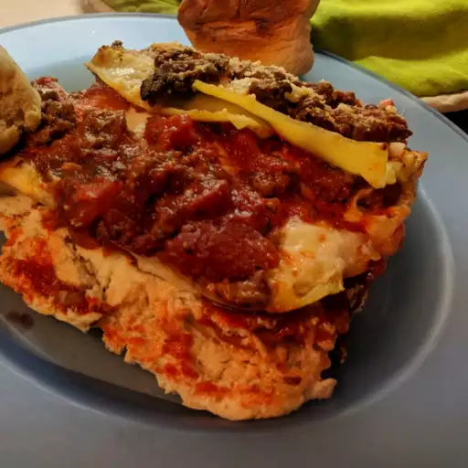

Odin Recipes!
Lasagna Recipe

Ingredients
Here's a list of ingredients you need to make the world's greatest lasagna!
- one pound of sweed italian sausage.
- 3/4 pound of lean ground beef
- 1/2 cup minced onion
- 2 cloves of garlic, crushed
- 1 can(28 oz) of crushed tomatos
- 2 cans(6.5 oz) of tomato sauce
- 2 cans(6 oz) tamato paste
- 1/2 cup of water
- 2 tablespoons white sugar
- 4 tablespoons chopped parsley, divided
- 1.5 teaspoons dried basil leaves
- 1.5 teaspoons salt, divided or to taste
- 1 teaspoon italian seasoning
- 1/4 teaspoon ground black pepper
- 12 lasagna noodles
- 16 Oz ricotta cheese
- 1 egg
- 3/4 pound mozzarella cheese, sliced
- 3/4 cup grated parmesan cheese
Directions
- Step 1
Cook sausage, ground beef, onion, and garlic in a Dutch oven over medium heat until well browned. Stir in crushed tomatoes, tomato sauce, tomato paste, and water. Season with sugar, 2 tablespons parsley, basil, 1 teaspoon salt, Italian seasoning, fennel seeds, and pepper. Simmer, covered, for about 1 1/2 hours, stirring occasionally.
- Step 2
Bring a large pot of lightly salted water to a boil. Cook lasagna noodles in boiling water for 8-10 minutes. Drain noodles, and rinse with cold water. In a mixing bowl, combine ricotta cheese with egg, remaining 2 tablespoons parsley, and 1/2 teaspoon salt.
- Step 3
Preheat the oven to 375 degrees F (190 degrees C)
- Step 4
To assemble, spread 1 1/2 cups of meat sauce in the bottom of a 9x13-inch baking dish. Arrange 6 noodles lengthwise over meat sauce. Spread with 1/2 of the ricotta cheese mixture. Top with 1/3 of the mozzarella cheese slices. Spoon 1 1/2 cups meat sauce over mozzarella, and sprinkle with 1/4 cup Parmesan cheese. Repeat layers, and top with remaining mozzarella and Parmesan cheese. Cover with foil: to prevent sticking, either spray foil with cooking spray or make sure the foil does not touch the cheese.
- Step 5
Bake in the preheated oven for 25 minutes. Remove the foil and bake for an additional 25 minutes. Rest lasagna for 15 minutes before serving.
Go back